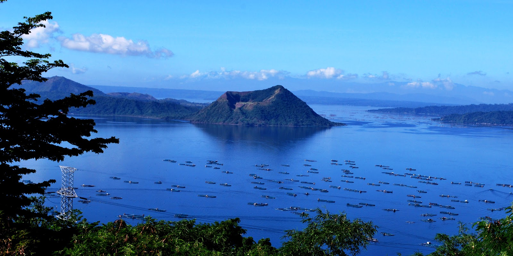

Batangas
Batangas is a province located in the Calabarzon region of the Philippines, known for its natural beauty and rich culture. The province has a diverse range of landscapes, from picturesque beaches and lush forests to rugged mountains and active volcanoes. Some of the popular natural attractions include Taal volcano, the diving spots in Anilao and Laiya, and the hot and cold springs in Lipa and Malvar. The province also boasts of several waterfalls, like the twin falls in San Juan, Tingga falls and many more.
Batangas is also known for its rich history and culture. The province is home to many historical sites, including the Taal Heritage Town, which is considered a living museum of traditional Filipino architecture and culture. The province is also known for its delicious food and strong traditions in agriculture, particularly in the production of coffee, cacao and coconut products.
Ala eh! Kayo ay pumarne!
Furthermore, Batangas is also known for its lively festivals and events, like the Tambor Tambor Festival in Taal, the Puto Festival in Lipa and the Sinulog Festival in Mabini. Overall, Batangas offers a unique blend of natural beauty, rich culture and history, delicious food, and vibrant festivals, making it a popular tourist destination in the Philippines.
Taal Volcano
Taal volcano is a popular tourist destination in the Philippines, known for its scenic views and unique location within a lake. Many people find the hike to the summit of the volcano to be challenging but rewarding, as the views of the surrounding area from the top are said to be breathtaking. Some visitors also enjoy exploring the surrounding towns and villages, which offer a glimpse into traditional Filipino culture and way of life. Additionally, Taal volcano is known for its historical significance, as it has been active for thousands of years and has played a role in shaping the local landscape and culture. Overall, Taal volcano is considered a unique and fascinating natural wonder by many people.
Last January 2020
Taal volcano had a major eruption on January 2020, it was the first eruption in over a decade and caused widespread damage and disruption to the surrounding area. The eruption began on January 12, 2020, with a series of earthquakes and steam-and-ash emissions. The ash plumes rose several kilometers into the air, and ashfall affected nearby towns and villages.
The Philippine Institute of Volcanology and Seismology (PHIVOLCS) raised the alert level to 4, indicating that a hazardous eruption was imminent, and ordered the evacuation of thousands of people living within a 14-kilometer radius of the volcano. The eruption caused widespread damage to infrastructure and agriculture, and ashfall and lahars caused damage to houses and other buildings. The ash and volcanic materials also affected the air and water quality, causing respiratory and skin irritation. The eruption also resulted in the closure of the Ninoy Aquino International Airport and several other airports.